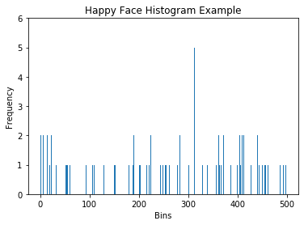
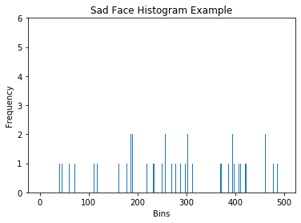

Human Emotion Classifier
Tarushree Gandhi: 903527176, Zayra Lobo: 903054233, Sanmeshkumar Udhayakumar: 902969263Fall 2019 CS 6476 Computer Vision: Class Project
Georgia Tech
Abstract
The goal of our project is to create a human emotion classifier for headshot images of people. For example, if the input is an image of a person with a sad expression, the classifier should output that the detected emotion is sadness. The motivation behind solving this problem is to provide feedback to systems that try to illicit positive human emotions, such as customer service. Our approach involves using the CK+ dataset of facial emotion images (which provides eight emotion labels based on facial expression), detecting and cropping the face from the image, extracting the facial descriptors in the images using Scale-Invariant Feature Transform (SIFT) descriptors, clustering and creating a bag of words description histogram of each image, and then training an SVM model to identify human emotions based on these bag of words description histograms. We were able to successfully classify over 70% of test images using this approach, and our primary limiting factor was likely the amount of training data we had for some emotion classes. We attempted to overcome the lack of data by augmenting the training dataset through techniques such as duplicating or flipping images to increase the size of the training data. INSERT MORE INFO ABOUT RESULTS OF DATA AUGMENTATIONTeaser Output Image (from this article)

Introduction
Customer feedback is an important mechanism for businesses to continue to improve, but filling out surveys in order to provide such feedback is often perceived as a nuisance to customers. If businesses could instead detect the emotion of their customers by simply taking an image of their face while they speak with customer service, then the customers would be able to save time by not filling out a survey and the business would be able to collect more feedback. Thus, we are implementing a human emotion classifier for a headshot photograph of a person. Our classifier will use grayscale photographs as input, and we will be using the CK+ database along with machine learning techniques in order to create our classifier. We will report the overall accuracy of our classifier and the accuracy on a class-by-class basis so that we make observations such as which emotion is most difficult to classify based on this dataset.Approach
- CK+ Database: For our experimental setup, we used the CK+ (Extended Cohn-Kanade Dataset) database, which is publicly available. It contains grayscale images of closeups of different people’s faces, with 8 different emotion labels: neutral, sadness, surprise, happiness, fear, anger, contempt and disgust.
- Face cropping: The face is cropped from the headshot image, as that is the indicator of emotion we will be using. In order to implement face detection, we used the Haar Cascade classifier to get the face coordinates. Then, we cropped the face using these coordinates.
For the image preprocessing step where faces are cropped and normalized, we exploited the Haar Cascade face classifier code set, which is a trained classifier for detecting objects, including faces.

- Facial feature extraction: We extracted features from the cropped face using Scale-Invariant Feature Transform (SIFT) descriptors. In order to extract these descriptors, we exploited the OpenCV SIFT functions.

- Clustering the features and BoW featurization: We clustered the features using Python's scikit-learn kmeans function in order to get K-representative “visual words”. We represented this "bag of words" as a histogram of the occurrences of these words in an image. This is to represent the features of an image in a compact vector.
It should be noted that the histogram below only has five clusters, but the final version of our classifier will likely have many more.
- SVM Classification: Finally, we will implement a machine learning model using Python's scikit-learn SVM classifier. We will train SVM using the histograms generated in the previous step. 70% of the dataset will used as a training set, 20% as validation set, and the rest 10% as the test set.
- Model Evaluation on Test Dataset: We will test the emotion classifier on the remaining 10% of the test dataset.

One obstacle we encountered while developing this approach was finding the whole set of images for each emotion, because each image for a particular emotion is in a random directory. Also, the emotion labels for each image are in a different but correlated directory from the actual image, so we had to write a script that would manually go through the directory of images and create a text file of directory paths of images for each emotion. For example, a text file called “anger.txt” would have all the image paths for angry emotion images.
A lack of data was also a significant obstacle that we faced with this approach. Initially, our SVM model had poor accuracy on classifying emotions with significantly less data than other emotions, so we had to resort to data augmentation to try to improve the accuracy of our model.
Experiment and Results
Proof-of-Concept Results
In order to determine whether the histograms of the descriptors in each image could indicate to machine learning models the type of emotion in that image, we ran an experiment (eight iterations with different emotions) in which we selected three sets of images from the CK+ database:Set1 = 20 images of emotion 1
Set2 = 20 other images of emotion 1
Set3 = 20 images of emotion 2
The descriptors in the combined set of these images were clustered into 20 clusters in order to perform dimension reduction and keep the bag of words description of each image small. Then a histogram was created for each image of the total number of each "word" present in that image.
Then we measured the correlation between the following using the numpy corrcoef() function:
Set1 and Set2 (Set1_2 correlation): We expect this to be a high correlation close to 1, cause the correlation is between images of the same emotion.
Set1 and Set3 (Set1_3 correlation): We expect this to be a correlation lower than that of Set1_2, since Set1_3 is comparing sets of different emotions.
Set2 and Set3 (Set2_3 correlation): We expect this to be a correlation lower than that of Set1_2, since Set2_3 is comparing sets of different emotions.
Below are the correlation results for the two happy and one sadness data sets. The correlation was as expected, with the two sets of happy data sets being highly correlated while the correlation of either happy set with the sadness set was much lower. Examples of the input images with SIFT keypoints drawn on them and the histograms used for correlation can be found in the Qualitative Results section.
Happy (Set 1) vs. Happy (Set 2) correlation: 0.81 (highest correlation, close to 1)
Happy (Set 1) vs. Sadness (Set 3) correlation: 0.49 (lower than Set1_2)
Happy (Set 2) vs. Sadness (Set 3) correlation: 0.38 (lower than Set1_2)
Correlations were taken between some other random combinations of emotions as well, and in almost every case, the correlations were as expected. These results indicate that the histograms of the descriptors in each image can determine the type of emotion in an image.
Note that in the correlation table below, every set of correlation in each row follows the title format of "Set1_2 correlation", "Set1_3 correlation", and "Set2_3 correlation". Also note that the correlation of happy1happy2 in the happy vs. sadness column will be different than the happy1happy2 correlation in the happy vs. disgust column, because the data was clustered differently in each of the experiments.
Observations:
- We noticed as k clusters and number of images were increased, the correlation behaved in a more expected way. This makes sense because the more data there is available and the more clusters there are, the more accurately the descriptors can become labelled as features, and can represent the images better.
- The emotions that had the least correlation difference were emotions that were similar. For example, the disgust correlation in red between disgust and anger doesn’t behave as expected since it is bigger than the correlation between the two sets of disgust images. This is explainable because disgust and anger are both negative emotions that can be similar. Meanwhile, disgust and surprise are more distinct emotions with 1 being negative and 1 being positive, and this is indicated by the large difference in correlation.
| Exp no. | Emotions | Correlation | Emotions | Correlation | Emotions | Correlation |
|---|---|---|---|---|---|---|
| Exp 1 | Happy1,Happy2 | 0.81 | Happy1,Sad1 | 0.49 | Happy2,Sad1 | 0.38 |
| Exp 2 | Happy1,Happy2 | 0.80 | Happy1,Disgust3 | 0.79 | Happy2,Disgust3 | 0.55 |
| Exp 3 | Happy1,Happy2 | 0.86 | Happy1,Anger3 | 0.79 | Happy2,Anger | 0.79 |
| Exp 4 | Happy1,Happy2 | 0.88 | Happy1,Surprise3 | 0.54 | Happy2,Surprise3 | 0.32 |
| Exp 5 | Disgust1,Disgust2 | 0.82 | Disgust1,Anger3 | 0.84 | Disgust2,Anger3 | 0.81 |
| Exp 6 | Disgust1,Disgust2 | 0.76 | Disgust1,Surprise3 | 0.64 | Disgust2,Surprise3 | 0.39 |
| Exp 7 | Disgust1,Disgust2 | 0.75 | Disgust1,Fear3 | 0.74 | Disgust2,Fear3 | 0.57 |
| Exp 8 | Disgust1,Disgust2 | 0.84 | Disgust1,Happy3 | 0.78 | Disgust2,Happy3 | 0.72 |
Final Experiment Results
For our final experiment, we first calculated the BoW histograms for each image in our dataset. Next, we used 80% of the data to train an SVM model and then used the model to predict the labels of the remaining 20% of the data. We defined success for this experiment as correctly identifying 50% of these images.Test 1: k = 500, 80/20 training/test data, no data augmentation
We started out with 500 clusters for our BoW clustering. We then trained our SVM model on those BoW vectors and tested it on our remaining data. Unfortunately, not all of the emotion classes had the same amount of data available for us to train our model on. Our initial distribution of training and test data for each class was as follows:| Emotion | Number of Training Images | Number of Test Images | Total Number of Images |
|---|---|---|---|
| Anger | 36 | 9 | 45 |
| Contempt | 14 | 4 | 18 |
| Disgust | 47 | 12 | 59 |
| Fear | 20 | 5 | 25 |
| Happy | 55 | 14 | 69 |
| Sadness | 22 | 6 | 28 |
| Surprise | 65 | 17 | 82 |
Due to the low number of samples for anger, contempt, fear, and sadness, we only achieved an overall accuracy of 56.72%. The confusion matrix of our SVM classification was as follows:
| Predicted Emotion | ||||||||
|---|---|---|---|---|---|---|---|---|
| Anger | Contempt | Disgust | Fear | Happy | Sadness | Surprise | ||
| Actual Emotion | Anger | 1 | 0 | 1 | 0 | 1 | 0 | 6 |
| Contempt | 0 | 0 | 1 | 0 | 0 | 0 | 3 | |
| Disgust | 0 | 0 | 11 | 0 | 1 | 0 | 0 | |
| Fear | 1 | 0 | 0 | 0 | 1 | 0 | 3 | |
| Happy | 0 | 0 | 3 | 0 | 11 | 0 | 0 | |
| Sadness | 0 | 0 | 1 | 0 | 1 | 0 | 4 | |
| Surprise | 1 | 0 | 1 | 0 | 0 | 0 | 15 | |
Although our overall accuracy surpassed the 50% threshold that we defined as our success level, we wanted to see if we could improve the accuracy of our classifier. First, we tried to increase the number of clusters for our BoW vectors.
Test 2: k = 1000, 80/20 training/test data, no data augmentation
We hypothesized that increasing the number of clusters for our SIFT descriptors from 500 to 1000 would make our BoW vectors more detailed and thus more distinct for each emotion. However, we ended up achieving poorer accuracy, with an overall accuracy of 52.24%. This decrease in accuracy, in spite of a supposed increase in the detail of the BoWs, could have been due to a lack of distinct SIFT descriptors for each emotion. If each emotion already did not have many descriptors specific to that class (perhaps due to a lack of training data), then increasing the number of clusters would not help increase the accuracy of classification. Below is the confusion matrix for 1000 clusters.| Predicted Emotion | ||||||||
|---|---|---|---|---|---|---|---|---|
| Anger | Contempt | Disgust | Fear | Happy | Sadness | Surprise | ||
| Actual Emotion | Anger | 0 | 0 | 1 | 0 | 2 | 0 | 6 |
| Contempt | 0 | 0 | 0 | 0 | 0 | 0 | 4 | |
| Disgust | 0 | 0 | 5 | 0 | 4 | 0 | 3 | |
| Fear | 0 | 0 | 0 | 0 | 1 | 0 | 4 | |
| Happy | 0 | 0 | 0 | 0 | 14 | 0 | 0 | |
| Sadness | 0 | 0 | 0 | 0 | 1 | 0 | 5 | |
| Surprise | 0 | 0 | 0 | 0 | 1 | 0 | 16 | |
Because increasing the number of clusters did not improve our overall classification accuracy, we returned to using 500 clusters and tried to modify how we split our training and test data for the emotions with fewer samples.
Test 3: k = 500, ~90/10 training/test data (for emotions with fewer samples), no data augmentation
Because we seemed to be getting a lower overall accuracy due to some classes have less data to train the SVM model on, we tried moving all but a few samples from the test data for these classes to the training data. Below is the new breakdown of how we decided to split the data for these emotion classes, with the bolded rows being the emotions that changed from an 80/20 training/test split to closer to 90/10:| Emotion | Number of Training Images | Number of Test Images | Total Number of Images |
|---|---|---|---|
| Anger | 42 | 3 | 45 |
| Contempt | 16 | 2 | 18 |
| Disgust | 47 | 12 | 59 |
| Fear | 23 | 2 | 25 |
| Happy | 55 | 14 | 69 |
| Sadness | 26 | 2 | 28 |
| Surprise | 65 | 17 | 82 |
Using this new training/test split for emotions with less data available, we observed an increase in overall accuracy to 71.15%. Below is the confusion matrix corresponding with this new split of training and test data:
| Predicted Emotion | ||||||||
|---|---|---|---|---|---|---|---|---|
| Anger | Contempt | Disgust | Fear | Happy | Sadness | Surprise | ||
| Actual Emotion | Anger | 1 | 0 | 0 | 0 | 0 | 1 | 1 |
| Contempt | 0 | 0 | 0 | 0 | 0 | 0 | 2 | |
| Disgust | 1 | 0 | 10 | 0 | 1 | 0 | 0 | |
| Fear | 0 | 0 | 0 | 0 | 1 | 0 | 1 | |
| Happy | 0 | 0 | 3 | 0 | 11 | 0 | 0 | |
| Sadness | 1 | 0 | 0 | 0 | 0 | 0 | 1 | |
| Surprise | 2 | 0 | 0 | 0 | 0 | 0 | 15 | |
Though we observed an increase in the overall accuracy of our classifier, we knew that we were still not training or testing on many samples for the emotions with less data available. So, we next tried to increase the amount of training data we had available using data augmentation.
Test 4: k = 500, 80/20 training/test data, data augmentation: repeated training images
The first type of data augmentation that we tried was repeating the same training data multiple times in the training set till we got a number of samples similar to the number in the other classes. Prior to this repetition of data, some of the training data was moved back to the test set so that we could have an 80/20 split of the data for training/testing again. Below is the result of the data augmentation on the number of samples in each class (bolded rows are the emotions for which we augmented the data):| Emotion | Number of Training Images | Number of Test Images | Total Number of Images |
|---|---|---|---|
| Anger | 44 | 11 | 55 |
| Contempt | 44 | 11 | 55 |
| Disgust | 47 | 12 | 59 |
| Fear | 44 | 11 | 55 |
| Happy | 55 | 14 | 69 |
| Sadness | 44 | 11 | 55 |
| Surprise | 65 | 17 | 82 |
Using this new training/test data, we observed a decrease in overall accuracy to 45.98%. Below is the confusion matrix corresponding with this new split of training and test data:
| Predicted Emotion | ||||||||
|---|---|---|---|---|---|---|---|---|
| Anger | Contempt | Disgust | Fear | Happy | Sadness | Surprise | ||
| Actual Emotion | Anger | 3 | 0 | 4 | 0 | 0 | 1 | 3 |
| Contempt | 1 | 0 | 2 | 2 | 1 | 0 | 5 | |
| Disgust | 0 | 0 | 11 | 0 | 1 | 0 | 0 | |
| Fear | 1 | 0 | 1 | 0 | 4 | 0 | 5 | |
| Happy | 0 | 0 | 3 | 0 | 11 | 0 | 0 | |
| Sadness | 3 | 1 | 2 | 1 | 1 | 0 | 3 | |
| Surprise | 2 | 0 | 0 | 0 | 0 | 0 | 15 | |
This significant decrease in accuracy could have been due to a lack of variety in the training data, in spite of the fact that we provided the model with more of it. If the data does not provide new information about the BoW vectors for that emotion, it seems as though the classification will continue to use poor metrics for classifiying different emotions. In fact, the classification may be even poorer because the training data is providing the same BoW vectors repeatedly, causing the classifier to believe that most BoW vectors in that class will have the exact same pattern, just as the data repeats the same vectors again and again. To attempt to alleviate this issue, we tried augmenting the data in a different way.
Qualitative Results
SIFT Descriptor Examples


Example of Histograms of Descriptor Clusters (Bag of Words Vectors)


Conclusion and Future Work
We demonstrated that human emotion classifcation can be performed with greater than 50% accuracy using BoW vectorization on images to train an SVM model. As is common in machine learning applications, the greatest obstacle faced with this technique was the lack of training data for our SVM model. Data augmentation methods can be helpful with this INSERT MORE INFO ABOUT DATA AUGMENTATION RESULTSFor future work, we would recommend gathering more training data for the SVM model in order to get more accurate results for the anger, contempt, fear, and sadness classes. Also, looking into other methods of grouping the SIFT descriptors, such as VLAD (Vector of Locally Aggregated Descriptors), could yield more accurate classification results than BoW did.
References
OpenCV Tutorial on Face Detection using Haar CascadesArticle about Classifying Human Emotions using Machine Learning
OpenCV Tutorial on SIFT